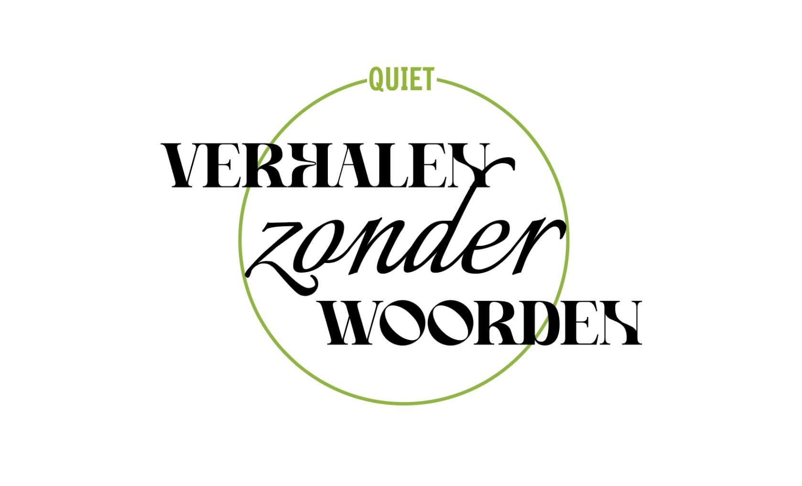

Verhalen zonder Woorden
Projectbeschrijving
De ontwerp opdacht was: maak lawaai voor (stille) armoede. Deze opdracht kwam van ontwerpbureau WARS voor Quiet Nederland, een organisatie die armoede verzacht en mensen verbind. Om lawaai te maken voor stille armoede – onder andere naamsbekendheid voor Quiet en armoede bespreekbaar maken – heb ik een tentoonstelling bedacht, met kunst van de members van Quiet. De tentoonstelling is een laagdrempelige en toegankelijke manier om aandacht te trekken naar – en het te hebben over – (stille) armoede.
Mijn rol
Ik heb het concept bedacht en uitgewerkt. Poster, post, en logo ter illustratie.
